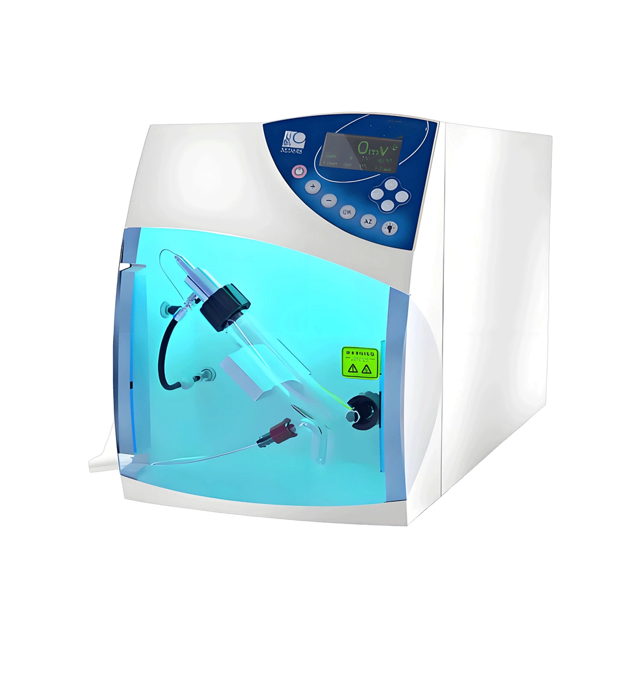

⚙ Functional Modules
Evaporative Light Scattering Detector (ELSD)
Typical sensitivity as low as 5 ng
Typical sensitivity as low as 5 ng
View original source page ↗
BIKAI L-3535 ELSD — Low-Temperature Evaporative Light Scattering Detector. Universal detection for HPLC beyond UV limitations: detects all non-volatile and semi-volatile compounds regardless of chromophores or electroactive groups (e.g. saponins, terpenes, lipids, sugars). Works with any HPLC system, full GLP compliance with SOP protocols, and a remote shutdown mode that extends instrument life. Ideal for natural products analysis, pharmaceutical QC, and food & nutraceutical testing.
Technical Specifications
| Parameter | Details |
|---|---|
| Detection Principle | Evaporative Light Scattering (ELS) |
| Flow Rate Range | 200 µL/min – 2 mL/min |
| Nebulizer Type | High-efficiency, low-bandwidth design |
| Control Method | PC software or local interface |
| Remote Shutdown | Yes (gas, heater, light source) |
| Compatibility | Works with any HPLC system |
| Regulatory Compliance | GLP-ready with full SOP support |